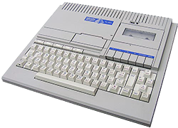
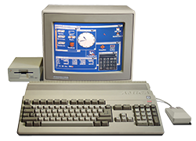

Mi chiamo Davide D'Agostino e sono nato il 9 novembre 1983 a Milano (Italia).

Mi sono appassionato alla programmazione all'età di 8 anni. Ho fatto di tutto per farmi regalare da mio Zio il suo PC-128, e ho mosso i miei primi passi nella programmazione proprio col manuale di Basic.
Il manuale su come programmare in basic è stato il primo libro che ho letto e putroppo è stato anche più difficile poiché non era scritto nella mia lingua, l'italiano bensì in inglese.
Questo è anche stato uno dei motivi per cui da sempre sono stato innamorato degli Stati Uniti. Anche se all'epoca l'italiana Olivetti era leader nel settore già da piccolo capivo che questo mondo si stava spostando nel continente americano.

Dopo di che a differenza dei miei amici che volevano il commodore 64 io ero più interessato ad avere la mitica amiga 500 che insieme al suo workbench) reputavo essere già iper rivoluzionario... molto di più di Mac OS o Windows 3.11
Dopo aver posseduto l'Amiga 500, 600 e 1200 ho iniziato a spostarmi verso i pc, dove ho inziato creare qualcosa di più concreto.
I miei primi siti web; erano circa gli anni 90 quando la mia scuola media insieme ad una piccola azienda locale decise di finanziare un progetto per creare una radio internet in parte fatta in multicast in parte in broadcast.
Fu uno dei primi esperimenti al mondo di contenuti on demand e le radio web così come le tv col tempo: grazie anche alle linee più veloci; hanno raggiunto un grande successo.
Nel 2002 mi sono diplomato all'istituto tecnico commerciale Gino Zappa come perito tecnico commerciale e programmatore.
Purtroppo anche se in parte la mia nazione è stata pioniera nel settore informatico, man mano che passavano gli anni tutto si spostava oltreoceano tanto che appunto era difficile ... se non impossibile, trovare qui delle buone univeristà si scienze informatiche.
Così decisi di continuare come avevo sempre fatto, autodidatta.
Negli anni di superiori, sottraevo gran parte dello studio scolastico per imparare a programmare in:
- PHP
- .NET
- Java
- C, C++
Diciamo che il php era il mio coltellino svizzero per il web, in particolare avevo abbracciato
la moda dei forum vbulletin. A malincuore dovevo ancora programmare
su windows (nonostante il mio amore per linux: ero un redhat fan) e
quindi dovevo creare applicazioni desktop in visualbasic o C# poi... Java, anche se il supporto gui
non è mai stato il suo forte serviva al medesimo scopo, fingiamo quindi di dire che era multipiattaforma
dando per scontato che tutti sappiamo quanto era complicato cercare di creare qualcosa che si
vedesse decentemente su tutti gli os
Discorso diverso fu per C/C++ e Assembler. Essi mi servirono (forse non dovrei dirlo) per riprogrammare i carissimi PIC dei decoder ... oppure per creare piccole ma non malevoli ignote applicazioni che diciamo hanno avuto l'onore di entrare nella lista di qualche noto antivirus.
1° Lavoro, 1 Anno alla IRPE come Commericale Software
Nel mentre mi arrivavano alcune richieste di lavoro, così accettai la prima proposta di lavoro come commericale software al quella che un tempo era una grande ed importante multinazionale italiana, la IRPE di Varese. Quello che a dir la verità mi spinse ad accettare il lavoro, oltre che ovviamente il buon stipendio fu il fatto che furono i primi importatori dei mitici Apple computers.
Fu un lavoro davvero bello, con clienti importantissimi quali il:
Devo davvero ringraziare persone come Laura Baratella per avermi formato, forgiato e cresciuto in un ambiente lavorativo davvero tosto e competitivo. Grazie di cuore.
2° Lavoro, 2 Anni alla IRPE come Sistemista e Programmatore
Sempre nella IRPE successivamente mi fu proposto di inizare a collaborare con altri sviluppatori Java a diversi progetti aziendali.
Questa fu la mia prima esperienza reale di lavoro in team... e in Italia.
3° Lavoro, 3 Anni alla Europ Assistance (Generali Group)
Nella IRPE economicamente le cose non andavano benissimo e proprio a causa delle acque agitate decisi di cambiare e andare nella Europ Assistance come programmatore .net (ma vi prego non ditelo in giro) su sistemi complessi di call center per clienti come:
4° Lavoro, 6 Anni alla LipsiaSOFT
Nel 2006 insieme ad un ragazzo conosciuto nei miei forum (... vbulletin ricordate? :D) abbiamo creato una grande impresa, una web agency.
Il motivo che mi ha spinto a ciò è presto detto, l'Italia nel nostro settore è molto molto indietro e mentre nel mondo si affacciavano linguagi come Ruby le nostre imprese rimanevano saldamente ancorate alle vecchie tecnologie... fin quando si trattava di Java o PHP ciò era anche sopportabile, ma quando nel 2005 si parlava ancora di visual basic e di asp.net ... tutto ciò mi rendeva molto triste sul mio futuro di programmatore, programmatore amante di nuove tecnologie.
Formammo la società, forse una delle prime nel nostro paese ad usare esclusivamente gli Apple Computers e sicuramente la primissima ad utilizzare Ruby e ovviamente Rails.
Negli anni in LipsiaSOFT e dopo aver sviluppato diverse centinaia di siti web (in parte visibili qui e qui) ho iniziato a dare il mio contributo dapprima con diverse decine di plugins Rails tra cui:
successivamente ho poco gradito il merge di Merb e ho deciso insieme ad altri ragazzi di sviluppare un buonissimo framework Padrino che sopperiva appunto all'uso esagerato in termini di RAM di Rails dando performance nettamente più elevate, qualcosa intorno al 4x più veloce.
Maggiori riferimenti li potete trovare nella pagina why e per capire nel dettaglio cosa ho seguito io potete consultare i miei progetti
Parentesi MISO
Grazie a Padrino Framework ho conosciuto uno dei miei migliori amici Nathan Esquenazi ho avuto modo di fare una fantastica esperienza finalmente in quella che considero la mia patria: gli Stati Uniti.
Ho quindi lavorato per circa 1 mese come consulente programmatore in quella che 2 anni fa era una startup miso finanziata dai Google Venture Capitals.
Qui ho capito che il mio paese erano gli Stati Uniti, tanti programmatori, coding camp, bar camp, conferenze etc...
San Francisco è la mia Città.
Oggi
Oggi 2012-08-01 ho ceduto tutte le mie quote LipsiaSOFT perché il mio sogno appunto è ritornare a "casa".